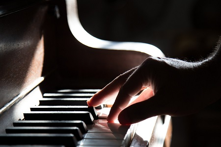

|
|
|||
|  |
תרפיה במוזיקה היא תהליך שבו המטפל יוצר קשר מכוון עם הילד אשר בא לקבל עזרה מקצועית בשל מצבי מצוקה או משברים - בין שהם פיזיים ובין שהם נפשיים, קוגניטיביים, התנהגותיים, חברתיים, תקשורתיים או רוחניים. קשר נרקם באמצעות מוזיקה ומילים. מטרת הטיפול היא לעזור להתגבר על הקשיים ולחזק צמיחה והתפתחות אישית על מנת לממש את הפוטנציאל של הילד. המוזיקה היא אמנות המאפשרת הבעה, קשר ותקשורת אנושיים. הטיפול נשען באופן מסיבי על עשייה מוזיקלית, הכוללת שימוש במוזיקה חיה - אלתור, ביצוע, הלחנה ושירה, ושימוש במוזיקה מוקלטת - האזנה למוזיקה. השימוש במוזיקה נעשה על מנת להעמיק, להרחיב ולדרבן את התהליך הטיפולי ולהגיע לשינויים סובייקטיביים בעולם הפנימי והבין-אישי של הילד, בהתנהגותו ובתפקודיו. |
||
| עם ילדים ש"אינם מילוליים כל הטיפול נעשה במוזיקה, כמעט ללא מילים. התקשורת המילולית עם הילד הלא מילולי נעשית בדרך כלל באופן מוזיקלי (שירים, דיבור המדגיש אלמנטים מוזיקליים). המטרה העיקרית של המטפל היא לעזור לילד להתקשר ישירות למוזיקה באמצעות בחירת מוזיקה מתאימה, או יצירת מוזיקה יחד עם הילד. למוזיקה השפעה ישירה על הילד והיא משמשת גורם עיקרי לשינוי התרפויטי. | |||
|
|||
|
שאלות נפוצות בהקשר לטיפול במוזיקה עם ילדים: כיצד מתבצע טיפול במוסיקה? טיפול במוסיקה כולל לעיתים עשייה מוסיקלית, כגון נגינה ושירה, באופן מובנה או ספונטאני, על ידי הילד לבדו או ביחד עם המטפל. במקרים אחרים, העשייה המוסיקלית יכולה להיות מלווה בהאזנה למוסיקה. במקרים אחרים מטפל במוסיקה עשוי ליזום התערבויות מוסיקליות שונות הנראות רצויות או הכרחיות לצורך קידום התהליך הטיפולי. ברוב המפגשים נערכת שיחה ובמהלכה יכול הילד לדבר על מצוקותיו, להביע את עמדותיו על המוסיקה שניגן או האזין וכדומה. היחס בין השיחה לבין הנגינה משתנה בהתאם לילד ובהתאם לסיטואציה. קורה לעיתים שבשלבים מסוימים ילד יעדיף רק לשוחח ובשלבים אחרים רק לנגן, ולעיתים לחלק את הפגישה בין שיחה לנגינה על פי בחירתו. כמה זמן אורך טיפול?
ככלל אורך הטיפול תלוי במטרתו, ובקצב ההתקדמות אשר שונה מילד לילד. הטיפול הינו חווייתי ובנוי משלושה שלבים: שלב האבחון ויצירת הקשר הטיפולי- שלב זה אורך מספר טיפולים בודדים, שלב העבודה- בשלב זה מתרחש עיקר הטיפול. כאן מתרחש עיבוד הרגשות שעולים בתוך התהליכים הפסיכודינאמיים. אורך שלב זה משתנה בהתאם לקצב השגת המטרות וייחודי לכל מטופל. שלב הסיום והפרידה-שלב זה מכין את המטופל להנאה מהישגי הטיפול בהמשך דרכו וכמו כן עוזר למטופל ליצור תחושת שלמות עם הטיפול ועם הפרידה מן המטפל.
טיפול במוסיקה מאפשר אפוא לתעל את העשייה המוסיקלית של הילד לצורך חיזוק דימויו העצמי, פיתוח מיומנויותיו הבין-אישיות ולעידודו לקחת חלק בחוויות של יצירתיות, סיפוק והצלחה. בטיפול במוסיקה ניתן לקדם ולחזק נושאים של הארכת יכולת ריכוז, העלאת מוטיבציה, שיפור יכולת המעבר בין משימות שונות ויכולת מילוי מדויקת של משימות, התמודדות עם דימוי עצמי וכל תחום רגשי אשר ספציפי לאותו מטופל.
האם יש צורך בידע מוסיקלי מוקדם? לא, אין צורך בידע מוסיקלי מוקדם. האם נשמרת סודיות של התכנים שמובאים לטיפול? מטפל במוסיקה מקפיד לשמור על הסודיות והחיסיון של מטופליו ושל התיעוד והסיכומים הכתובים הנוגעים להם. כמו כן, חלה חובת חסיון על מידע מכל סוג שהוא שיש לו קשר לטיפול ובכלל זה תהליכי היצירה המתפתחים במהלך הטיפול ותוצריהם (מתוך תקנון האתיקה של האיגוד הישראלי לתראפיה באמצעות הבעה ויצירה). |
|||
|
הטיפול מיועד לילדים ומתבגרים. הטיפולים מתקיימים בקליניקה שלי בקרית השרון, נתניה. הטיפול מתקיים פעם בשבוע בשעה קבועה למשך 45 דקות. עלות הטיפול: 350 שח למפגש. |
|||
 הודעה לווטסאפ
raya.bv@gmail.com :ד"ר רעיה בלנקי-וורונוב. לקביעת פגישה חייגו: 054-4934956 או כתבו ל
הודעה לווטסאפ
raya.bv@gmail.com :ד"ר רעיה בלנקי-וורונוב. לקביעת פגישה חייגו: 054-4934956 או כתבו ל